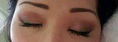

Bangkok Eyelid Surgery Prices
Blepharoplasty surgery in Bangkok is usually performed on an outpatient basis in an office or surgery center setting. I perform the majority of my upper eyelid procedures in a surgical procedure suite. Recovery is approximately one week and depends on whether or not the underlying orbital fat is removed
Skin only blepharoplasty has a the shortest downtime.
A lower lid Transconjunctival bleph would help with the bags — color problems are not fixed. I would stay away from fillers as they need to be repeated and the blepharoplasty lasts a long long time
Blepharoplasty recovery time
2 weeks should be enough to fully recover from most blepharoplasties. Some patients recover faster and rare ones slower. It does depend to an extent on what was done during the procedure and whether just uppers were done or all 4 lids
Ask your doctor what to expect because they will know how their patients recover from what they are planning to do fo you.
Laser eyelid surgery
I see no advantage to using the laser for eyelid surgery compared to a scalpel. Some surgeons use the laser as a marketing tool to make you think it is more “cutting edge” technology.
A laser can be used to remove the eyelid skin during a blepharoplasty in Bangkok. It can also be used to tighten the skin.
Laser assisted eyelid surgery
I have used both laser and traditional techniques (scalpel) to do upper and lower eyelid surgery in Bangkok. The laser sounds great but adds a lot of cost to the procedure as the technology is expensive. There are lots of misconceptions among patients regarding laser use
Asian Eyelid Surgery 1 Month By Dr. Tanongsak Panyawirunroj
Let me sum up my feelings based on my experiences and those of others. The laser adds no clinical benefit when performing blepharoplasty surgery on the upper or lower eyelids.
Bleeding is not reduced, incision size is the same, sutures are still used, and healing is the same as with a scalpel
The costs go up as does the risk as the surgeon needs to “see” the procedure rather than “feel and see” the procedure as with scalpel surgery. I don’t see any advantage to using the laser under these conditions and that’s what I tell my patients
Bruising after an upper eyelid blepharoplasty
Bruising may occur with or without muscle excision from an upper eyelid blepharoplasty in Bangkok. There are 6 things that can be done to reduce bruising and swellingCold compresses and icing of the area for the first 36 hoursOff all aspirin or aspirin containing productsBlood pressure under controlPain under controlElevationUse an Arnica type herbal product
Asian Eyelid Surgery 40 Year Old With Doctor Somyos Kunachak
Bruising after Blepharoplasty
Many things contribute to bruising after blepharoplasty in Bangkok. However, because of the present technology, pure skin resection, skin and muscle resection or either with fat resection can all be done with essentially the same amount of bruising
There are,however, fewer upper (and, especially lower) eyelid lifts being done with fat resection. We have found that fat resection actually ages the eyelids significantly. Many people are, in fact, adding fat to the eyelids in order to rejuvenate them
The main things that increase bruising are certain foods that contain Vitamin-E and many medicines, especially the anti-inflammatories. Certain other drugs such as Arnica and Bromalin can reduce bruising
Doctor Kamol Pansritum Eyelid Surgery
Insurance coverage
You need to have a vision exam by an optometrist or ophthalmologist to determine if you have visual field deficits from your excess eyelid skin. This will be used to preauthorize insurance coverage for your procedure
The greater the visual field deficits the more likely for insurance coverage.
Circles under eyes
I would begin with filler to the tear troughs. This may or may not improve the darkness but would address the bags. Nothing is truly permanent in cosmetic surgery, given the aging process.
Insurance for eyelid surgery
For insurance to cover eyelid surgery you will need to have a visual field exam to show that the heavy luds are causing vision problems. At your age, however, it is unlikely that your insurance will cover it
Doctor Narongdej Jiarapeepan Cosmetic Surgery Eye Lift Patient Photo Results
3 Weeks Post Bleph Left Eye Has Mild Ptosis – Wait or Revise?
If you have preoperatively mild ptosis why was it not corrected? You will need ptosis surgery after a 3 month wait.
Blepharoplasty healing time may require months
As you describe that the eyelid ptosis was present before eye lid lift, it is possible that you may have assymetry of your eyelids after surgery. This may be swelling, healing, or real. However, since this has been 3 weeks since your eye lid lift, adjusting the ptosis repair is not likely to be successful at this point
Wait for your healing process (3 -6 months) to complete and then reassess your eyelid symmetry with your surgeon.
Doctor Ronachai Komthong Blepharoplasty Day 56
Eye still lazy after blepharoplasty, wait a bit!
3 weeks after blepharoplasty you still have swelling in the eyelid, that swelling can weigh the eyelid down. It is critical to wait at least 6 to 10 weeks before you start to worry about symmetry or complete correction
I would plan to wait at least 6 months. Things will tend to improve for that period of time and chasing the result too early can lead to severe problems.
Blepharoplasty with fat transfer for hollows.
For 35 years I have used blepharoplasty to rove the excess fat in the eyelids and sewing that fat into the hollows.
Lower lid bags
Restylane or Juvederm should last 1-2 years at least. Best results would come from transconjunctival blepharoplasty in Bangkok with fat repositioning, minimal fat resection. I appreciate your concern but done right, it will not look hollow.
Double Eyelid Surgery At Kamol Cosmetic Hospital
Transconjunctival blepharoplasty for lowerLid fat. Bags.
Transconjunctival blepharoplasty for lowerLid fat. Bags is what u need IF when you feel the bag it is not bone. Filler will make your bag look bigger. Look at the doctor’s results.
What to do about eyelid problems
Your photo shows significant bulging in your lower eyelid but not that much wrinkling of the skin. The bulging of the fatty compartments accentuates the ” tear trough’ or valley between the eyelid bulge and the cheek
My preference for correcting this would be:
- Lower eyelid Blepharoplasty( eyelid plastic surgery) either by transconjunctival (from the inside of the lower eyelid) or external route
- conservative removal of the fat bulges. Saving the fat for transplantation

Eye Lift Plastic Surgery By Dr Dalip Juneja
- Preservation of the lower eyelid pretarsal muscles by careful eye cosmetic surgery
- Using the excised fat, and transplanting this fat into the “tear trough” by undermining the muscle attachments and the periosteum at the orbital rim.
- Light phenol peel to the lower eyelid 2 days later if there are fine line wrinkles and dark circles
As for the non-surgical correction of the tear troughs, my own prefence is Juvederm carefully injected beneath the lower eyelid muscles
I have also had excellent longer lasting results with indirect injection of dilute Sculptra in the sub-muscular space slightly below the tear trough and molding it upwards to correct the depression..
Any suggestions on a Upper Eye Lift?
Eye Surgery At Destination Beauty By Hygeia Healthcare
You appear to be a good candidate for an upper lid blepharopalsty, however keep in mind that the factors that cause eyelid dropping include a sagging forehead. You can demonstrate this by sitting in front of your mirror, and with both hands lift your brows– and notice the improvement of your upper eyelids
I would consider for you both an upper lid blepharoplasty as well as a forehead lift if you are a candidate — after physical exam.
Lower eye fat bags
With your extremely limited pictures, its difficult to give you and exact plan. I can tell you that I see a few areas that can be helped, you have some fat in the lower eyelid that is herniating, you have volume loss in your cheek and tear trough area and you have malar bags as well
Eyelid Surgery At Urban Beauty Thailand Company Limited
Each of these can be addressed and improve your overall appearance so that is where a consultation would help with coming up with an exact plan. As for now, fillers, lower belpharoplasty and skin resurfacing are all options
When Healing Doesn’t Follow the Expected
Upper blepharoplasty in Bangkok does require a period of healing and convalescense, which usually lasts between 3 to 7 days. Subtle puffiness or tightness,and bruising can last several weeks. It is normal for our patients to be out and about, or back at work at one week, certainly by 2 weeks
The experience you describe is not expected and therefore requires medical attention. We recommend you see your surgeon right away.
Eyelid Surgery For Asian Eyes Patient Image Result
Three weeks following cosmetic surgery for eyes is usually adequate time for the vast majority of pain, swelling, and bruising to subside following a blepharoplasty procedure. Absolutely, go see your treating surgeon immediately. If he/she if not available, then I would go to an emergency room to be evaluated by a specialist
You are too important to ignore these problems.
Eye opening problem
In most cases, swelling and bruising after upper blepharoplasty in Bangkok resolves within 2 weeks. Your photograph seems to indicate there is still bruising (which may be resolving as seen by a yellow-purple tint to the skin)and some redness at the incision sites
In cases when bruising was severe after cosmetic surgery for eyes, it can take longer to heal. Rarely, a hematoma (collection of blood) can form in the eyelid which can also cause swelling to last longer. Other rare causes of your concerns could be an injury to the tendon of the muscle that lifts the eyelid (not usually the muscle itself), or a bit of connective tissue called the orbital septum can get caught in a suture
Upper Eye Lift Surgery At Thailand Plastic Surgery Center
Either of these cases might need a re-operation to fix. Luckily, most of the time, your problem will resolve with time. If it does not improve after a few months, further treatment might be necessary
It may be a good idea to consult with an oculofacial plastic surgeon.
Tear troughs are a difficult problem
One of the more common complaints patients have that leads them to consider lower eyelid blepharoplasty surgery is puffiness in the lower eyelids. Often this puffiness is accompanied by a depression between the lower eyelid and upper cheek
This depression is commonly referred to a tear trough deformity. As you can imagine, the best way to address this depression is usually by a combination of techniques. Judicious removal of fat from the lower eyelids will lessen the puffiness, while re-draping of some of the fat into the depression will elevate and make the tear trough less apparent
Bangkok Eyelid Surgery At Urban Beauty Thailand Company Limited
This is generally a judgment made intraoperatively by your surgeon. In general, it is best to err on the side of preserving that rather than removing it. Excess fat in facial volume is more associated with youth
Excision of too much fat will often lead to hollowing out of the eyes, giving the patient a more aged appearance.
My policy on followup visits.
I am a board certified plastic surgeon in Houston, Texas, and do alot of eyelid surgery, especially Asian eyelid surgery in Bangkok. I usually see patients four to five days after eye lid operation to remove sutures
Then I ask them to come back in two weeks for another followup visit. At that time, I usually take followup pictures.
Although I do not ask patients specifically to come back after that, I tell them that they can come back at any time to see me again if they have any concerns
Blepharoplasty At Clinic Soi 1
All followup visits are included with the surgery at no extra charge. However, there may be an additional charge if any other surgery or revision is wanted.
Timing between blepharoplasty and face lift.
Why are you separating the operations? Facial and eyelid rejuvenation surgeries are usually performed together, and you should be able to find an experienced board-certified facial plastic surgeon to help you in this regard
You should consider doing the operations together since face lifting tends to increase the amount of lower lid skin which could be judiciously removed (lower eyelid skin-pinch) at the end of the face lift.
Fat transfer is an excellent idea
As we age, we lose fat that overlays the orbital bone under the eye. This, along with the general sagging that occurs in the face, can result in loose, hollow areas under the eyes, much like a balloon that is losing air
Fat grafting can restore a youthful appearance under the eyes in a very natural manner by “blowing the balloon back up.” The results can be long lasting and the procedure is easy to undergo.
Hard Lump After Blepharoplasty – Check your Surgeon
It looks like it could be a cyst. Check with your surgeon to be certain and discuss treatment options.
Lump after blepharoplasty
From the picture it looks like you may have some type of cyst. It is hard to say what could have caused this. It’s possible that it could also be a reaction to suture that may have been used
If you had fat injected at the same time it may be a fat nodule. Without knowing all the history it is difficult to give specific advise. I would follow up with your surgeon closely
These are very specialized and fussy treatments.
You will do fantastic with a small amount of under eye Restylane. You do need to find a very experienced injector.
You can try fillers first
Please see your local plastic surgeon for evaluation and treatment. You try new filler called Voluma first. It will last about two years. If you liked the results, then try fat grafting.
Caution Necessary with Lower Eyelid Surgery and Midface Lift
Generally speaking, No, you don’t need to do lower eyelid surgery BECAUSE you are having a midface lift. In fact, a great number of complications result when a midface lift is done and then the surgeon removes “excess” skin that is discovered as a result of the midface lift
The problem is that some of the skin movement you see right after the midface lift is temporary. As the cheek descends, it takes the skin back down with it. If that skin was removed, then the lower eyelid is pulled down
The result can be a simple lowering of the eyelid which is rather unattractive, or in more severe cases the eyelid rolls outward causing an ectropion. Ectropion is disfiguring, painful, and potentially vision threatening if the cornea becomes dry and gets injured/infected
It is also very challenging to correct. If your lower eyelid is satisfactory to you pre-operatively, I suspect it will continue to be so after your mid-face lift. And if not, you can still do the procedure after the midface lift is healed and the area is stable, diminishing your complication risk
Dark circles and eye bags
This is a frequently asked question. I think you would benefit from some filler such as Juvederm to the tear trough areas to fill them out. You have a small amount of fat herniation to the lower lids which accentuates the appearance of the dark circles
The dark circles are caused by a network of fine veins under the skin of the lower lids which are very thin. The veins carry “blue” blood so this gives the appearance of “dark” circles under the eyes
There’s really nothing you can do per se for the “dark circles” but you can mask it to some degree with makeup. The filler will help with any shadowing.
Dr prices in 2014:
- $600 – Dr Pitch – Yannhee hospital, Bangkok, Thailand – 2014;
Price of hooded lid surgery in 2015:
- $3,500 – Ronachai Komthong, MD, Bangkok Plastic Surgeon – 16 Soi Udomsuk 30 Sukhumvit 103, Bangna, Bangkok, – 2015;
- $3,600 – Interplast Clinic – 2015;
- $3,700 – Ronachai Komthong, MD, Bangkok Plastic Surgeon – 16 Soi Udomsuk 30 Sukhumvit 103, Bangna, Bangkok, – 2015;
- $4,500 – Siripong Prasertsuntarasai, MD, Bangkok Plastic Surgeon – Sukumvit Road (Ekkamai), Bangkok, – 2015;
- $4,700 – Chakarin Suchakaro, MD, Bangkok Plastic Surgeon – 998 Rimklongsamsan (Rama9) Rd., Bangkapi, Huaykwang, Bangkok, – 2015;
- $5,500 – Narongdej Jiarapeepan, MD – Inactive Account, Bangkok Plastic Surgeon – 998 Rimklongsamsen Road, Bangkapi, Huay Kwang, Bangkok, – 2015;
- $5,600 – Narongdej Jiarapeepan, MD – Inactive Account, Bangkok Plastic Surgeon – 998 Rimklongsamsen Road, Bangkapi, Huay Kwang, Bangkok, – 2015;
- $6,100 – Kanit Wittayavanichai, MD, Bangkok Plastic Surgeon – 40/63 Soi Vibhavadi Rangsit 74, Donmuang Airport, Donmueang, Bangkok, – 2015;
- $6,200 – Kanit Wittayavanichai, MD, Bangkok Plastic Surgeon – 40/63 Soi Vibhavadi Rangsit 74, Donmuang Airport, Donmueang, Bangkok, – 2015;
- $6,200 – Piya Rungruxsiri, MD, Bangkok Plastic Surgeon – 432/6-7 Siam Square Soi 9 Rama1 Rd. , Pathumwan, Bangkok , – 2015;
- $7,500 – Interplast Clinic – 2015;
- $7,800 – Somyos Kunachak, MD, Bangkok Facial Plastic Surgeon – 53-55 Rachadamri Rd., Patumwan, Bangkok, – 2015;
- $8,100 – Siripong Prasertsuntarasai, MD, Bangkok Plastic Surgeon – Sukumvit Road (Ekkamai), Bangkok, – 2015;
- $8,900 – Piya Rungruxsiri, MD, Bangkok Plastic Surgeon – 432/6-7 Siam Square Soi 9 Rama1 Rd. , Pathumwan, Bangkok , – 2015;
The realself prices for treatment in 2016:
- $2,700 – Dalip Juneja, MD, Sathorn, Plastic Surgeon – 39 Somerset Park Suanplu Building, M Floor, Soi Suanplu, Sathorn Road, Thunmahamek,, Sathorn,, Bangkok – 2016;
- $2,700 – Interplast Clinic – 2016;
- $4,400 – Piya Rungruxsiri, MD, Bangkok Plastic Surgeon – 432/6-7 Siam Square Soi 9 Rama1 Rd. , Pathumwan, Bangkok , – 2016;
- $4,700 – Interplast Clinic – 2016;
- $5,500 – Somyos Kunachak, MD, Bangkok Facial Plastic Surgeon – 53-55 Rachadamri Rd., Patumwan, Bangkok, – 2016;
- $6,300 – Interplast Clinic – 2016;
- $6,300 – Siripong Prasertsuntarasai, MD, Bangkok Plastic Surgeon – Sukumvit Road (Ekkamai), Bangkok, – 2016;
- $6,700 – Kamol Pansritum, MD – Account Suspended, Bangkok Plastic Surgeon – 1223 Ladpraw 94 Intraporn Rd, Wangthonglang, Bangkok, – 2016;
- $6,900 – Ronachai Komthong, MD, Bangkok Plastic Surgeon – 16 Soi Udomsuk 30 Sukhumvit 103, Bangna, Bangkok, – 2016;
- $7,300 – Dalip Juneja, MD, Sathorn, Plastic Surgeon – 39 Somerset Park Suanplu Building, M Floor, Soi Suanplu, Sathorn Road, Thunmahamek,, Sathorn,, Bangkok – 2016;
- $7,300 – Tanongsak Panyawirunroj, MD, Bangkok Plastic Surgeon – 1 Rattanathibet 30 Rd., Bangkasor, Mueang Nonthaburi, Bangkok, Nonthaburi – 2016;
- $8,000 – Tanongsak Panyawirunroj, MD, Bangkok Plastic Surgeon – 1 Rattanathibet 30 Rd., Bangkasor, Mueang Nonthaburi, Bangkok, Nonthaburi – 2016;
- $8,500 – Chakarin Suchakaro, MD, Bangkok Plastic Surgeon – 998 Rimklongsamsan (Rama9) Rd., Bangkapi, Huaykwang, Bangkok, – 2016;
Eyelid Surgery With Laser By Dr. Tanongsak Panyawirunroj, MD, Bangkok Plastic Surgeon
Treatment cost in 2017:
- $2,600 – Somyos Kunachak, MD, Bangkok Facial Plastic Surgeon – 53-55 Rachadamri Rd., Patumwan, Bangkok, – 2017;
- $4,400 – Chakarin Suchakaro, MD, Bangkok Plastic Surgeon – 998 Rimklongsamsan (Rama9) Rd., Bangkapi, Huaykwang, Bangkok, – 2017;
- $4,800 – Piya Rungruxsiri, MD, Bangkok Plastic Surgeon – 432/6-7 Siam Square Soi 9 Rama1 Rd. , Pathumwan, Bangkok , – 2017;
- $4,800 – Ronachai Komthong, MD, Bangkok Plastic Surgeon – 16 Soi Udomsuk 30 Sukhumvit 103, Bangna, Bangkok, – 2017;
- $4,900 – Somyos Kunachak, MD, Bangkok Facial Plastic Surgeon – 53-55 Rachadamri Rd., Patumwan, Bangkok, – 2017;
- $5,100 – Theerapong Poonyakariyagorn, MD, Bangkok Plastic Surgeon – 20/8-9 Soi Ruamruedi, Phloenchit Rd., Lum Phini, Patumwan, Bangkok, – 2017;
- $5,400 – Narongdej Jiarapeepan, MD – Inactive Account, Bangkok Plastic Surgeon – 998 Rimklongsamsen Road, Bangkapi, Huay Kwang, Bangkok, – 2017;
- $6,600 – Narongdej Jiarapeepan, MD – Inactive Account, Bangkok Plastic Surgeon – 998 Rimklongsamsen Road, Bangkapi, Huay Kwang, Bangkok, – 2017;
- $7,200 – Siripong Prasertsuntarasai, MD, Bangkok Plastic Surgeon – Sukumvit Road (Ekkamai), Bangkok, – 2017;
- $7,300 – Thanakom Laisakul, MD, Bangkok Plastic Surgeon – 998 Rim Klong Samsen Rd., Bangkok, – 2017;
- $7,700 – Kanit Wittayavanichai, MD, Bangkok Plastic Surgeon – 40/63 Soi Vibhavadi Rangsit 74, Donmuang Airport, Donmueang, Bangkok, – 2017;
- $7,800 – Interplast Clinic – 2017;
- $7,900 – Kanit Wittayavanichai, MD, Bangkok Plastic Surgeon – 40/63 Soi Vibhavadi Rangsit 74, Donmuang Airport, Donmueang, Bangkok, – 2017;
- $8,100 – Siripong Prasertsuntarasai, MD, Bangkok Plastic Surgeon – Sukumvit Road (Ekkamai), Bangkok, – 2017;
- $8,400 – Siripong Prasertsuntarasai, MD, Bangkok Plastic Surgeon – Sukumvit Road (Ekkamai), Bangkok, – 2017;
- $8,700 – Theerapong Poonyakariyagorn, MD, Bangkok Plastic Surgeon – 20/8-9 Soi Ruamruedi, Phloenchit Rd., Lum Phini, Patumwan, Bangkok, – 2017;
- $8,800 – Tanongsak Panyawirunroj, MD, Bangkok Plastic Surgeon – 1 Rattanathibet 30 Rd., Bangkasor, Mueang Nonthaburi, Bangkok, Nonthaburi – 2017;
- $9,000 – Theerapong Poonyakariyagorn, MD, Bangkok Plastic Surgeon – 20/8-9 Soi Ruamruedi, Phloenchit Rd., Lum Phini, Patumwan, Bangkok, – 2017;
Eyelid Surgery Male By Dr Theerapong Poonyakariyagorn, MD, Bangkok Plastic Surgeon
Doctor cost for under eye bags surgery in 2018:
- $3,000 – Ronachai Komthong, MD, Bangkok Plastic Surgeon – 16 Soi Udomsuk 30 Sukhumvit 103, Bangna, Bangkok, – 2018;
- $3,100 – Piya Rungruxsiri, MD, Bangkok Plastic Surgeon – 432/6-7 Siam Square Soi 9 Rama1 Rd. , Pathumwan, Bangkok , – 2018;
- $3,800 – Thanakom Laisakul, MD, Bangkok Plastic Surgeon – 998 Rim Klong Samsen Rd., Bangkok, – 2018;
- $4,000 – Kamol Pansritum, MD – Account Suspended, Bangkok Plastic Surgeon – 1223 Ladpraw 94 Intraporn Rd, Wangthonglang, Bangkok, – 2018;
- $4,200 – Narongdej Jiarapeepan, MD – Inactive Account, Bangkok Plastic Surgeon – 998 Rimklongsamsen Road, Bangkapi, Huay Kwang, Bangkok, – 2018;
- $4,500 – Dalip Juneja, MD, Sathorn, Plastic Surgeon – 39 Somerset Park Suanplu Building, M Floor, Soi Suanplu, Sathorn Road, Thunmahamek,, Sathorn,, Bangkok – 2018;
- $4,600 – Theerapong Poonyakariyagorn, MD, Bangkok Plastic Surgeon – 20/8-9 Soi Ruamruedi, Phloenchit Rd., Lum Phini, Patumwan, Bangkok, – 2018;
- $5,300 – Somyos Kunachak, MD, Bangkok Facial Plastic Surgeon – 53-55 Rachadamri Rd., Patumwan, Bangkok, – 2018;
- $5,400 – Piya Rungruxsiri, MD, Bangkok Plastic Surgeon – 432/6-7 Siam Square Soi 9 Rama1 Rd. , Pathumwan, Bangkok , – 2018;
- $6,000 – Siripong Prasertsuntarasai, MD, Bangkok Plastic Surgeon – Sukumvit Road (Ekkamai), Bangkok, – 2018;
- $6,200 – Siripong Prasertsuntarasai, MD, Bangkok Plastic Surgeon – Sukumvit Road (Ekkamai), Bangkok, – 2018;
- $6,200 – Thanakom Laisakul, MD, Bangkok Plastic Surgeon – 998 Rim Klong Samsen Rd., Bangkok, – 2018;
- $7,400 – Dalip Juneja, MD, Sathorn, Plastic Surgeon – 39 Somerset Park Suanplu Building, M Floor, Soi Suanplu, Sathorn Road, Thunmahamek,, Sathorn,, Bangkok – 2018;
- $7,700 – Somyos Kunachak, MD, Bangkok Facial Plastic Surgeon – 53-55 Rachadamri Rd., Patumwan, Bangkok, – 2018;
- $8,200 – Dalip Juneja, MD, Sathorn, Plastic Surgeon – 39 Somerset Park Suanplu Building, M Floor, Soi Suanplu, Sathorn Road, Thunmahamek,, Sathorn,, Bangkok – 2018;
- $8,400 – Piya Rungruxsiri, MD, Bangkok Plastic Surgeon – 432/6-7 Siam Square Soi 9 Rama1 Rd. , Pathumwan, Bangkok , – 2018;
- $8,500 – Theerapong Poonyakariyagorn, MD, Bangkok Plastic Surgeon – 20/8-9 Soi Ruamruedi, Phloenchit Rd., Lum Phini, Patumwan, Bangkok, – 2018;
- $8,600 – Somyos Kunachak, MD, Bangkok Facial Plastic Surgeon – 53-55 Rachadamri Rd., Patumwan, Bangkok, – 2018;
Eyelid Surgery With Laser With Doctor Chakarin Suchakaro, MD, Bangkok Plastic Surgeon
Realself prices for plastic surgery eyelid in 2019:
- $2,600 – Somyos Kunachak, MD, Bangkok Facial Plastic Surgeon – 53-55 Rachadamri Rd., Patumwan, Bangkok, – 2019;
- $3,500 – Somyos Kunachak, MD, Bangkok Facial Plastic Surgeon – 53-55 Rachadamri Rd., Patumwan, Bangkok, – 2019;
- $3,700 – Tanongsak Panyawirunroj, MD, Bangkok Plastic Surgeon – 1 Rattanathibet 30 Rd., Bangkasor, Mueang Nonthaburi, Bangkok, Nonthaburi – 2019;
- $3,700 – Theerapong Poonyakariyagorn, MD, Bangkok Plastic Surgeon – 20/8-9 Soi Ruamruedi, Phloenchit Rd., Lum Phini, Patumwan, Bangkok, – 2019;
- $3,800 – Thanakom Laisakul, MD, Bangkok Plastic Surgeon – 998 Rim Klong Samsen Rd., Bangkok, – 2019;
- $4,000 – Piya Rungruxsiri, MD, Bangkok Plastic Surgeon – 432/6-7 Siam Square Soi 9 Rama1 Rd. , Pathumwan, Bangkok , – 2019;
- $4,200 – Kanit Wittayavanichai, MD, Bangkok Plastic Surgeon – 40/63 Soi Vibhavadi Rangsit 74, Donmuang Airport, Donmueang, Bangkok, – 2019;
- $4,500 – Kamol Pansritum, MD – Account Suspended, Bangkok Plastic Surgeon – 1223 Ladpraw 94 Intraporn Rd, Wangthonglang, Bangkok, – 2019;
- $4,900 – Somyos Kunachak, MD, Bangkok Facial Plastic Surgeon – 53-55 Rachadamri Rd., Patumwan, Bangkok, – 2019;
- $5,300 – Interplast Clinic – 2019;
- $5,600 – Dalip Juneja, MD, Sathorn, Plastic Surgeon – 39 Somerset Park Suanplu Building, M Floor, Soi Suanplu, Sathorn Road, Thunmahamek,, Sathorn,, Bangkok – 2019;
- $5,600 – Somyos Kunachak, MD, Bangkok Facial Plastic Surgeon – 53-55 Rachadamri Rd., Patumwan, Bangkok, – 2019;
- $6,200 – Dalip Juneja, MD, Sathorn, Plastic Surgeon – 39 Somerset Park Suanplu Building, M Floor, Soi Suanplu, Sathorn Road, Thunmahamek,, Sathorn,, Bangkok – 2019;
- $6,300 – Narongdej Jiarapeepan, MD – Inactive Account, Bangkok Plastic Surgeon – 998 Rimklongsamsen Road, Bangkapi, Huay Kwang, Bangkok, – 2019;
- $8,100 – Thanakom Laisakul, MD, Bangkok Plastic Surgeon – 998 Rim Klong Samsen Rd., Bangkok, – 2019;
- $8,200 – Ronachai Komthong, MD, Bangkok Plastic Surgeon – 16 Soi Udomsuk 30 Sukhumvit 103, Bangna, Bangkok, – 2019;
- $8,200 – Ronachai Komthong, MD, Bangkok Plastic Surgeon – 16 Soi Udomsuk 30 Sukhumvit 103, Bangna, Bangkok, – 2019;
Doctor Kanit Wittayavanichai, MD, Bangkok Plastic Surgeon Top Eyelid Surgery Photo
The prices for plastic surgery of eyes in 2020:
- $2,600 – Interplast Clinic – 2020;
- $2,700 – Thanakom Laisakul, MD, Bangkok Plastic Surgeon – 998 Rim Klong Samsen Rd., Bangkok, – 2020;
- $2,900 – Kanit Wittayavanichai, MD, Bangkok Plastic Surgeon – 40/63 Soi Vibhavadi Rangsit 74, Donmuang Airport, Donmueang, Bangkok, – 2020;
- $2,900 – Piya Rungruxsiri, MD, Bangkok Plastic Surgeon – 432/6-7 Siam Square Soi 9 Rama1 Rd. , Pathumwan, Bangkok , – 2020;
- $3,000 – Piya Rungruxsiri, MD, Bangkok Plastic Surgeon – 432/6-7 Siam Square Soi 9 Rama1 Rd. , Pathumwan, Bangkok , – 2020;
- $4,700 – Siripong Prasertsuntarasai, MD, Bangkok Plastic Surgeon – Sukumvit Road (Ekkamai), Bangkok, – 2020;
- $5,000 – Chakarin Suchakaro, MD, Bangkok Plastic Surgeon – 998 Rimklongsamsan (Rama9) Rd., Bangkapi, Huaykwang, Bangkok, – 2020;
- $5,200 – Ronachai Komthong, MD, Bangkok Plastic Surgeon – 16 Soi Udomsuk 30 Sukhumvit 103, Bangna, Bangkok, – 2020;
- $5,400 – Theerapong Poonyakariyagorn, MD, Bangkok Plastic Surgeon – 20/8-9 Soi Ruamruedi, Phloenchit Rd., Lum Phini, Patumwan, Bangkok, – 2020;
- $5,500 – Siripong Prasertsuntarasai, MD, Bangkok Plastic Surgeon – Sukumvit Road (Ekkamai), Bangkok, – 2020;
- $5,900 – Dalip Juneja, MD, Sathorn, Plastic Surgeon – 39 Somerset Park Suanplu Building, M Floor, Soi Suanplu, Sathorn Road, Thunmahamek,, Sathorn,, Bangkok – 2020;
- $6,400 – Tanongsak Panyawirunroj, MD, Bangkok Plastic Surgeon – 1 Rattanathibet 30 Rd., Bangkasor, Mueang Nonthaburi, Bangkok, Nonthaburi – 2020;
- $6,600 – Tanongsak Panyawirunroj, MD, Bangkok Plastic Surgeon – 1 Rattanathibet 30 Rd., Bangkasor, Mueang Nonthaburi, Bangkok, Nonthaburi – 2020;
- $6,800 – Kanit Wittayavanichai, MD, Bangkok Plastic Surgeon – 40/63 Soi Vibhavadi Rangsit 74, Donmuang Airport, Donmueang, Bangkok, – 2020;
- $6,900 – Thanakom Laisakul, MD, Bangkok Plastic Surgeon – 998 Rim Klong Samsen Rd., Bangkok, – 2020;
- $7,900 – Interplast Clinic – 2020;
- $8,000 – Chakarin Suchakaro, MD, Bangkok Plastic Surgeon – 998 Rimklongsamsan (Rama9) Rd., Bangkapi, Huaykwang, Bangkok, – 2020;
- $8,000 – Ronachai Komthong, MD, Bangkok Plastic Surgeon – 16 Soi Udomsuk 30 Sukhumvit 103, Bangna, Bangkok, – 2020;
- $8,100 – Chakarin Suchakaro, MD, Bangkok Plastic Surgeon – 998 Rimklongsamsan (Rama9) Rd., Bangkapi, Huaykwang, Bangkok, – 2020;
- $8,500 – Somyos Kunachak, MD, Bangkok Facial Plastic Surgeon – 53-55 Rachadamri Rd., Patumwan, Bangkok, – 2020;
- $8,600 – Piya Rungruxsiri, MD, Bangkok Plastic Surgeon – 432/6-7 Siam Square Soi 9 Rama1 Rd. , Pathumwan, Bangkok , – 2020;
- $8,900 – Interplast Clinic – 2020;
Doctor Siripong Prasertsuntarasai, MD, Bangkok Plastic Surgeon Blepharoplasty Incisions
Eye bag removal surgery clinic price list in 2021:
- $2,700 – Kanit Wittayavanichai, MD, Bangkok Plastic Surgeon – 40/63 Soi Vibhavadi Rangsit 74, Donmuang Airport, Donmueang, Bangkok, – 2021;
- $3,000 – Tanongsak Panyawirunroj, MD, Bangkok Plastic Surgeon – 1 Rattanathibet 30 Rd., Bangkasor, Mueang Nonthaburi, Bangkok, Nonthaburi – 2021;
- $3,700 – Kanit Wittayavanichai, MD, Bangkok Plastic Surgeon – 40/63 Soi Vibhavadi Rangsit 74, Donmuang Airport, Donmueang, Bangkok, – 2021;
- $4,000 – Tanongsak Panyawirunroj, MD, Bangkok Plastic Surgeon – 1 Rattanathibet 30 Rd., Bangkasor, Mueang Nonthaburi, Bangkok, Nonthaburi – 2021;
- $4,000 – Tanongsak Panyawirunroj, MD, Bangkok Plastic Surgeon – 1 Rattanathibet 30 Rd., Bangkasor, Mueang Nonthaburi, Bangkok, Nonthaburi – 2021;
- $5,200 – Chakarin Suchakaro, MD, Bangkok Plastic Surgeon – 998 Rimklongsamsan (Rama9) Rd., Bangkapi, Huaykwang, Bangkok, – 2021;
- $5,700 – Narongdej Jiarapeepan, MD – Inactive Account, Bangkok Plastic Surgeon – 998 Rimklongsamsen Road, Bangkapi, Huay Kwang, Bangkok, – 2021;
- $6,800 – Chakarin Suchakaro, MD, Bangkok Plastic Surgeon – 998 Rimklongsamsan (Rama9) Rd., Bangkapi, Huaykwang, Bangkok, – 2021;
- $7,200 – Kamol Pansritum, MD – Account Suspended, Bangkok Plastic Surgeon – 1223 Ladpraw 94 Intraporn Rd, Wangthonglang, Bangkok, – 2021;
- $7,200 – Narongdej Jiarapeepan, MD – Inactive Account, Bangkok Plastic Surgeon – 998 Rimklongsamsen Road, Bangkapi, Huay Kwang, Bangkok, – 2021;
- $8,200 – Dalip Juneja, MD, Sathorn, Plastic Surgeon – 39 Somerset Park Suanplu Building, M Floor, Soi Suanplu, Sathorn Road, Thunmahamek,, Sathorn,, Bangkok – 2021;
- $8,200 – Somyos Kunachak, MD, Bangkok Facial Plastic Surgeon – 53-55 Rachadamri Rd., Patumwan, Bangkok, – 2021;
- $8,300 – Kanit Wittayavanichai, MD, Bangkok Plastic Surgeon – 40/63 Soi Vibhavadi Rangsit 74, Donmuang Airport, Donmueang, Bangkok, – 2021;
- $8,300 – Siripong Prasertsuntarasai, MD, Bangkok Plastic Surgeon – Sukumvit Road (Ekkamai), Bangkok, – 2021;
- $8,500 – Dalip Juneja, MD, Sathorn, Plastic Surgeon – 39 Somerset Park Suanplu Building, M Floor, Soi Suanplu, Sathorn Road, Thunmahamek,, Sathorn,, Bangkok – 2021;
- $8,500 – Dalip Juneja, MD, Sathorn, Plastic Surgeon – 39 Somerset Park Suanplu Building, M Floor, Soi Suanplu, Sathorn Road, Thunmahamek,, Sathorn,, Bangkok – 2021;
- $8,900 – Interplast Clinic – 2021;